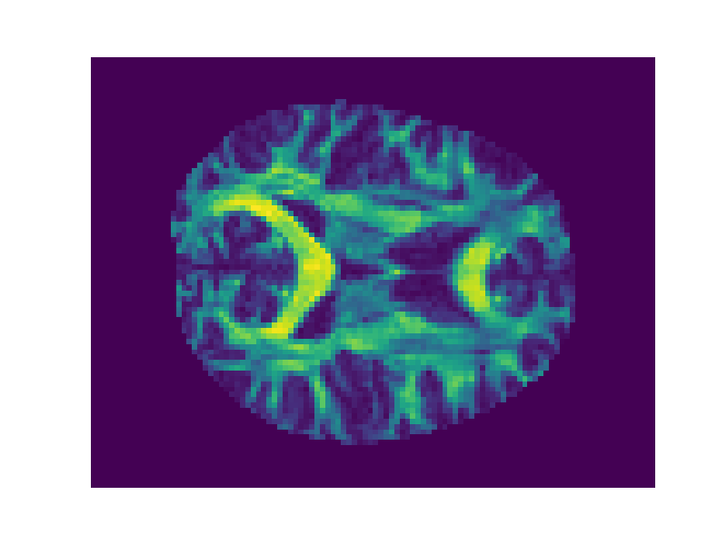

AFQ API¶
An example using the AFQ API
Out:
Dataset is already in place. If you want to fetch it again please first remove the folder /Users/arokem/.dipy/stanford_hardi
import os.path as op
import matplotlib.pyplot as plt
import nibabel as nib
from AFQ import api
import AFQ.data as afd
afd.organize_stanford_data()
base_dir = op.join(op.expanduser('~'), 'AFQ_data', 'stanford_hardi')
myafq = api.AFQ(preproc_path=op.join(afd.afq_home, 'stanford_hardi'),
sub_prefix='sub')
FA = nib.load(myafq.dti_fa[0]).get_data()
fig, ax = plt.subplots(1)
ax.matshow(FA[:, :, FA.shape[-1] // 2], cmap='viridis')
ax.axis("off")
plt.show()
Total running time of the script: (0 minutes 0.746 seconds)
Download Python source code:
plot_afq_api.py
Download IPython notebook:
plot_afq_api.ipynb